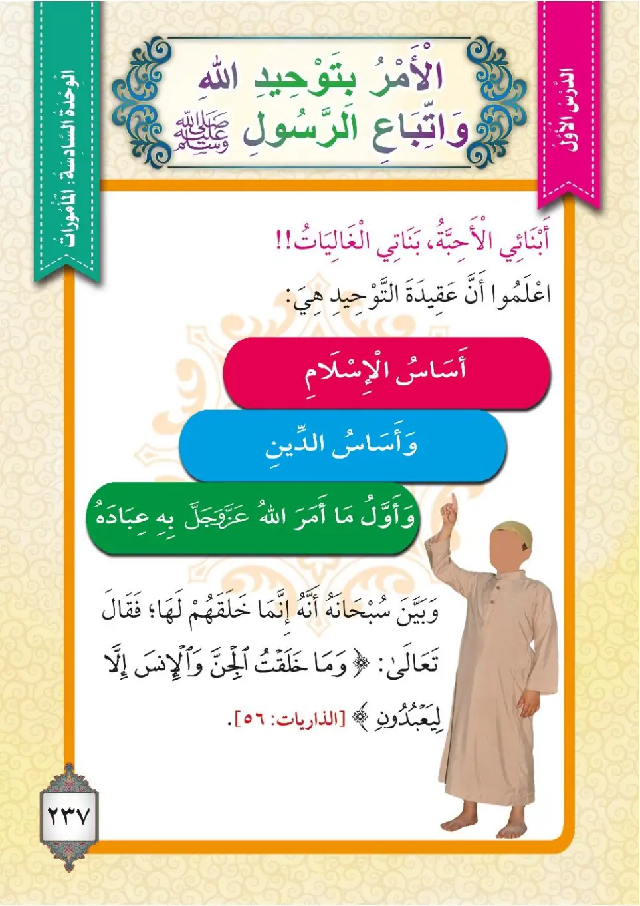

Stage 3·المرحلة الثالثة⭐ Unit 2
الأَمْرُ بِالتَّوْحِيدِ The Command to Tawheed
From the Textbookpp. 238–239

أَبْنَائِي الْأَحِبَّةُ، بَنَاتِي الْغَالِيَاتُ!! اعْلَمُوا أَنَّ عَقِيدَةَ التَّوْحِيدِ هِيَ أَسَاسُ الْإِسْلَامِ وَأَسَاسُ الْأَسَاسِ، وَأَوَّلُ مَا أَمَرَ اللهُ عَزَّ وَجَلَّ بِهِ عِبَادَهُ؛ فَخَلَقَهُمْ إِنَّمَا خَلَقَهُمْ لِعِبَادَتِهِ، فَقَالَ سُبْحَانَهُ:
Abna'i al-ahibbah, banati al-ghaliyat!! i'lamu anna 'aqidata at-tawhidi hiya asasu al-Islami wa asasu al-asasi, wa awwalu ma amara Allahu azza wa jalla biHi 'ibadaHu; fa-khalaqaHum innama khalaqaHum li-'ibadatiHi, fa-qala subhanaHu:
My beloved sons, my dear daughters! Know that the creed of Tawheed (monotheism) is the foundation of Islam and the foundation of foundations, and it is the first thing Allah, Mighty and Majestic, commanded His servants; He created them only to worship Him, for He, glory be to Him, said:
என் அன்பு மகன்களே! என் அன்பு மகள்களே!! தவ்ஹீத் (ஏகத்துவம்) கொள்கையே இஸ்லாத்தின் அடித்தளம் என்பதை அறிந்து கொள்ளுங்கள். அது அடிப்படை எல்லாவற்றின் அடிப்படையாகும். அல்லாஹ் தன் அடியார்களுக்கு முதலில் கட்டளையிட்டதும் இதுவே. அவன் அவர்களை வணங்குவதற்காகவே படைத்தான். அவன் கூறினான்:
﴿وَمَا خَلَقْتُ الْجِنَّ وَالْإِنسَ إِلَّا لِيَعْبُدُونِ﴾
Wa ma khalaqtu al-jinna wal-insa illa li-ya'budun.
I created jinn and mankind only to worship Me:
ஜின்களையும் மனிதர்களையும் என்னை வணங்குவதற்காகவே தவிர நான் படைக்கவில்லை.
أَرْسَلَ اللهُ الْمُرْسَلِينَ بِعَقِيدَةِ التَّوْحِيدِ، وَأَنْزَلَ بِهَا الْكُتُبَ. قَالَ تَعَالَى:
Arsala Allahu al-mursalina bi-'aqidati at-tawhidi, wa anzala biHa al-kutuba. Qala ta'ala:
Allah sent the messengers with the creed of Tawheed, and revealed the Books with it. Allah the Exalted said:
அல்லாஹ் தூதர்களை தவ்ஹீத் கொள்கையுடன் அனுப்பினான்; அதனுடன் வேதங்களையும் இறக்கினான். அல்லாஹ் கூறினான்:
﴿وَمَا أَرْسَلْنَا مِن قَبْلِكَ مِن رَّسُولٍ إِلَّا نُوحِي إِلَيْهِ أَنَّهُ لَا إِلَٰهَ إِلَّا أَنَا فَاعْبُدُونِ﴾
Wa ma arsalna min qablika min rasulin illa nuhi ilayHi annahu la ilaha illa ana fa-'budun.
We never sent any messenger before you [Muhammad] without revealing to him: ‘There is no god but Me, so serve Me.’
உமக்கு முன் நாங்கள் அனுப்பிய ஒவ்வொரு தூதருக்கும் "என்னைத் தவிர வேறு இறைவன் இல்லை; ஆதலால் என்னையே வணங்குங்கள்" என்று அறிவித்தே தவிர (வேறு விதமாக) அனுப்பவில்லை.
وَلِذَلِكَ كَانَ أَوَّلُ مَا يُخَاطِبُ بِهِ كُلُّ رَسُولٍ قَوْمَهُ بِقَوْلِهِ: (يَا قَوْمِ اعْبُدُوا اللهَ مَا لَكُمْ مِنْ إِلَهٍ غَيْرُهُ)، وَلَقَدْ سَارَ الدُّعَاةُ الْمُصْلِحُونَ مِنْ عُلَمَاءِ هَذِهِ الْأُمَّةِ عَلَى نَهْجِهِمْ.
Wa li-dhalika kana awwalu ma yukhatibu biHi kullu rasulin qawmaHu bi-qawliHi: (Ya qawmi u'budu Allaha ma lakum min ilahin ghayruHu), wa laqad sara ad-du'atu al-muslihun min 'ulama'i hadhihi al-ummati 'ala nahjiHim. (Mukhtasarun min khutbati «'Aqidatu at-Tawhid» li-sh-shaykhi al-'allamati Salih al-Fawzan -hafizaHu Allah-).
That is why the first thing every messenger used to address his people with was his saying: (O my people, worship Allah; you have no god other than Him). The righteous caller-scholars of this nation have followed their path.
அதனால்தான் ஒவ்வொரு தூதரும் தம் மக்களுக்கு முதன்முதலில் கூறியது: "என் சமூகத்தாரே! அல்லாஹ்வை வணங்குங்கள்; அவனைத் தவிர உங்களுக்கு வேறு இறைவன் இல்லை" என்பதே. இந்தச் சமுதாயத்தின் சீர்திருத்த அறிஞர் `துஆத்`களும் அவர்களின் வழியிலேயே சென்றனர்.